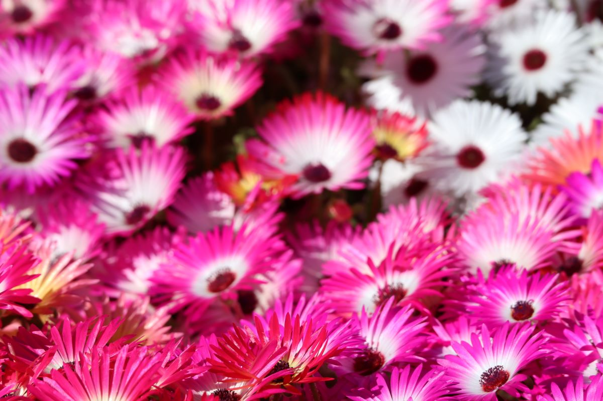
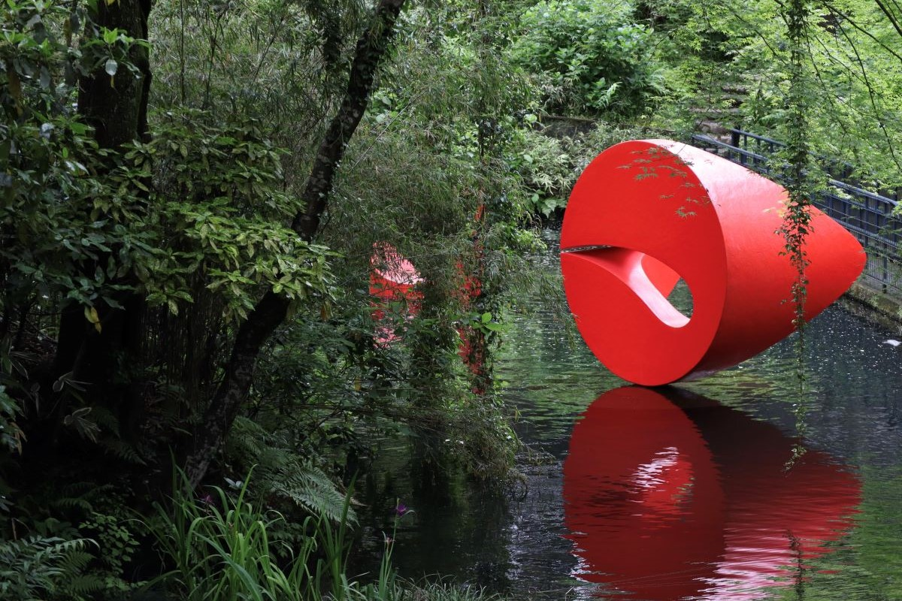
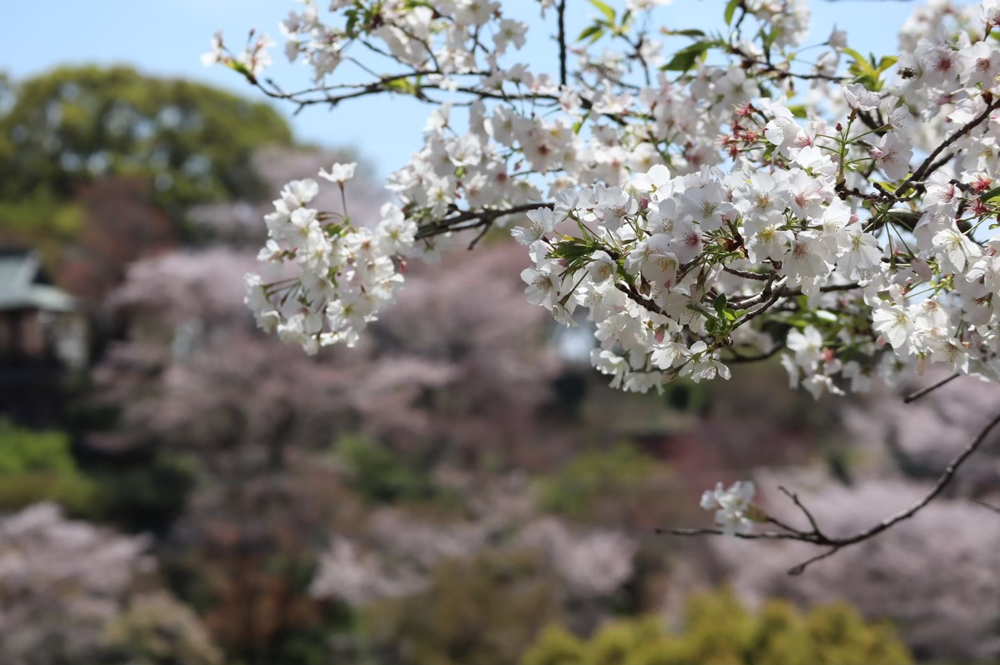
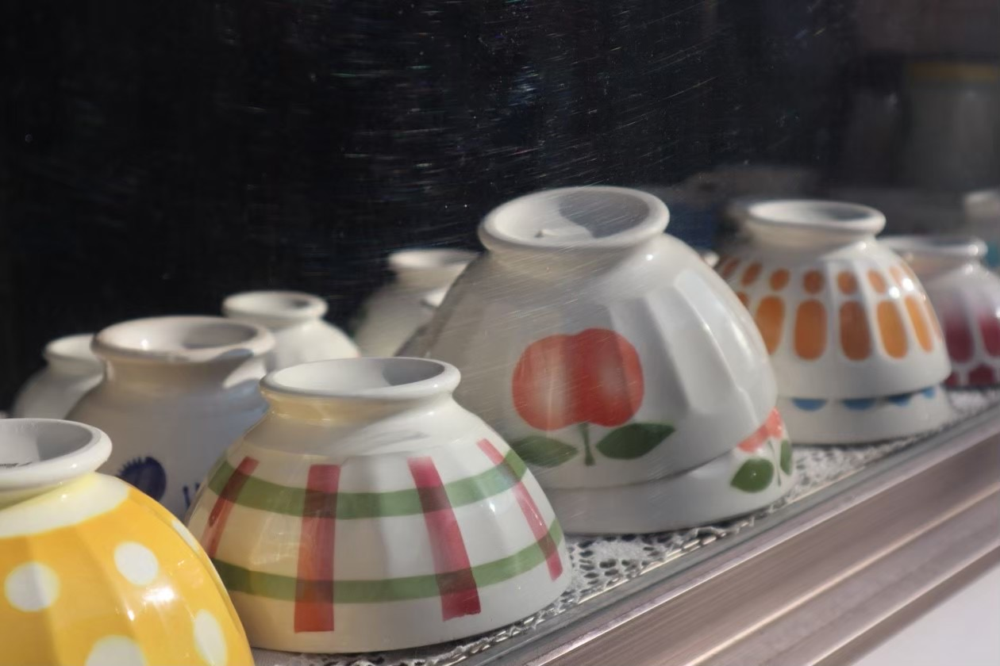
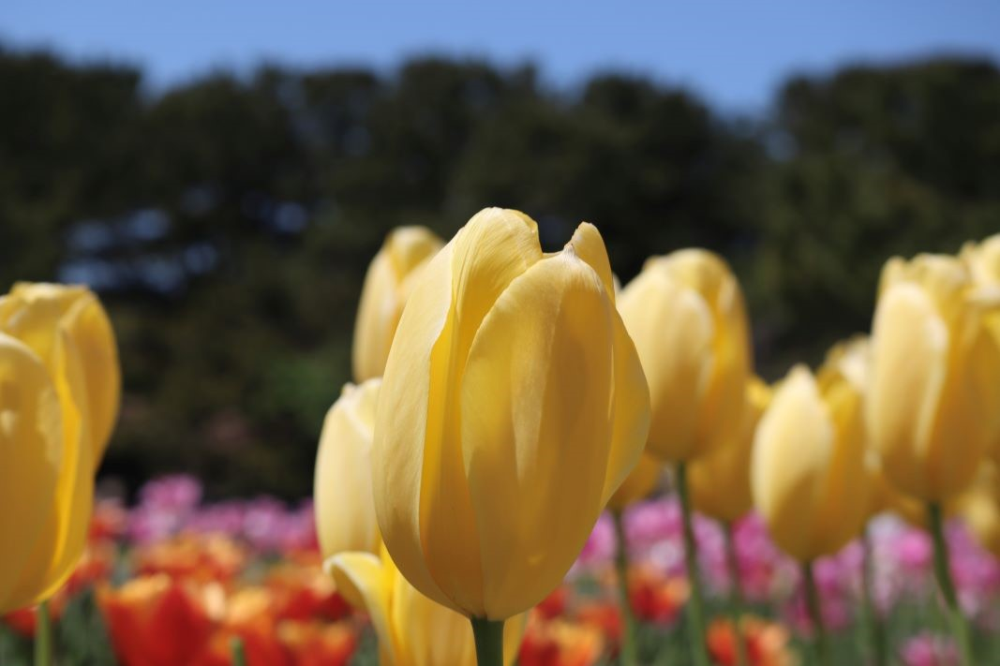
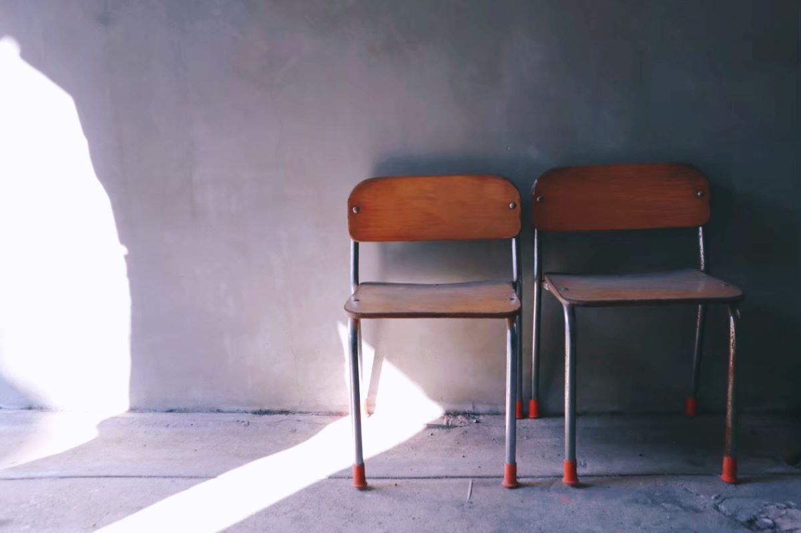

<DOCUTYPE html>
<html jang="ja">
<head>
   <meta charset="utf-8">
   <meta name="viewport" content="width=device-width,initial-scale=1.0" />
   <link rel="stylesheet" href="https://unpkg.com/modern-css-reset/dist/reset.min.css">
   <link rel="stylesheet" href="css/style.css">
   <link rel="stylesheet" href="css/responsive.css">
   <link rel="stylesheet" href="css/img-up.css">
   <title>KARIYA MIO</title>
</head>
<body id="photo">
<header class="header01">
   <div class="logo">
         
   </div>
   <nav class="nav">
      <ul class="item">
         <li class="list"><a href="index.html">HOME</a></li>
         <li class="list"><a href="about.html">ABOUT</a></li>
         <li class="list"><a href="skill.html">SKILL</a></li>
         <li class="list"><a href="portfolio.html">WORKS</a></li>
         <li class="list"><a href="contact.html">CONTACT</a></li>
      </ul>
   </nav>
</header>

      <div class="photo">
         <div class="modal-wrapper">
            
         </div>
         <ul class="gallery">
            <li class="landscape"></li>
            <li class="landscape"></li>
            <li class="landscape"></li>
            <li class="landscape"></li>
            <li class="landscape"></li>
            <li class="landscape"></li>
            <li class="landscape"></li>
            <li class="landscape"></li>
            <li class="landscape"></li>
            <li class="landscape"></li>
            <li class="landscape"></li>
            <li class="landscape"></li>
            <li class="landscape"></li>
            <li class="landscape"></li>
            <li class="landscape"></li>
            <li class="landscape"></li>
            <li class="landscape"></li>
            <li class="landscape"></li>
            <li class="landscape"></li>
            <li class="landscape"></li>
         </ul>
      </div>
   <footer>
      <p>© 2024 KARIYA MIO</p>
   </footer>
   <script src="js/img-up.js"></script>
</body>
</html>